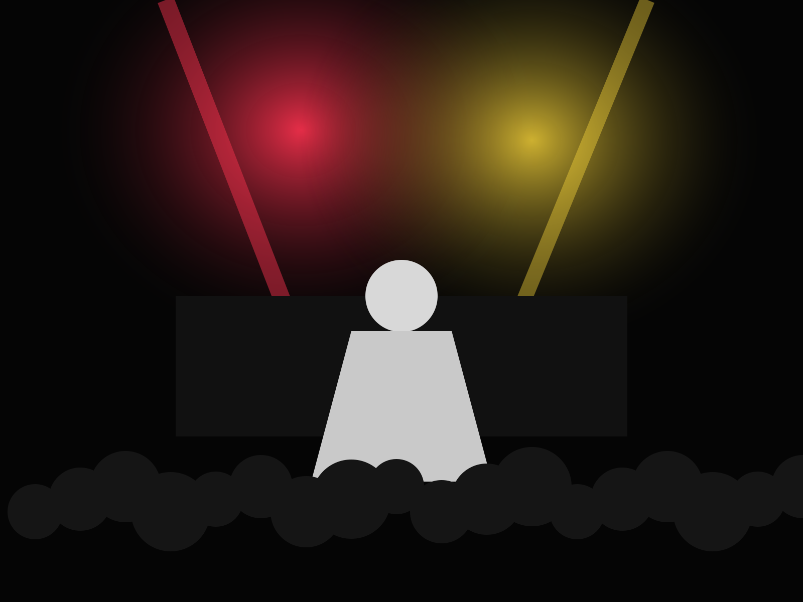
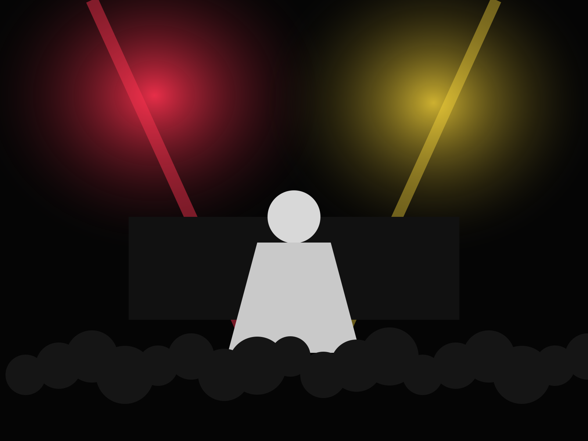

Come for the opener.
Lineups are built as a whole. The first act is not background music for the bar.
A 220-capacity room for new music, weird lineups, good sound, and people who still want to discover something in person.


Analog synths, blown-out drums, and songs that still survive when the machines are turned off.
Good sightlines. Real low end. No VIP balcony looking down at everybody else.
Lineups are built as a whole. The first act is not background music for the bar.
No reserved pit, no premium rail, no paid shortcut to the front.
The PA, room treatment, and engineer get priority over decorative production.
If something feels wrong, find staff. We would rather interrupt a show than ignore it.